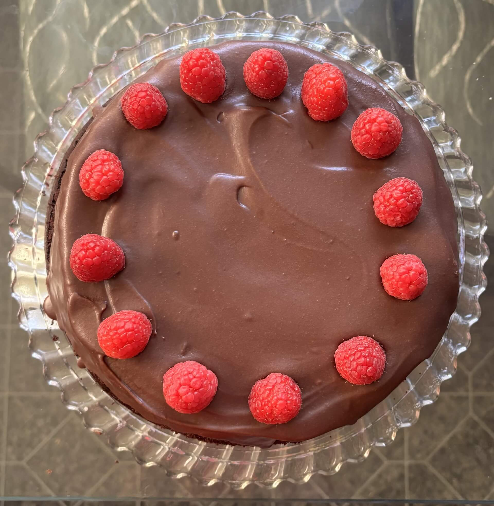

place the blackberries, the sugar, and the lemon juice in a medium saucepan. cook the blackberries over medium heat, stirring every so often, for about 10 minutes. press the blackberries against the side of the pan to help crushing them.
if the mixture is drying and sticking to the bottom of the pan, add one tablespoon of water, or more as needed.
mix the cornstarch and water together until the cornstarch has dissolved
once the blackberries have dissolved and the mixture is thick and syrupy, add the dissolved cornstarch to the pan and immediately mix with a spatula. cook for 2 minutes, stirring, until the sauce is thick.
remove the sauce from the heat, and pour into a fine-mesh strainer over a bowl, to retain the seeds and the core of the blackberries. press the blackberries down in order to obtain as much sauce as possible. put in fridge to cool
pre-heat the oven to 325ºF.
place the graham cracker in a food processor and process to obtain fine crumbs.
add the brown sugar and mix to combine.
melt the butter and mix with the crumbs and sugar.
press the mixture on the bottom of an 8” or 9” cheesecake pan. if using an 8” springform pan, it must be deep.
bake the crust in the oven for 10 minutes.
remove it from the oven and let it cool down.
grease the sides of the cheesecake pan.
beat the cream cheese for 3 minutes with a mixer at medium speed, until creamy.
add the granulated sugar to the bowl and beat for 2 minutes at medium speed.
scrape the bowl and beat for another 30 seconds. add the sour cream and mix to combine. scrape the bowl.
add the eggs one at a time to the bowl, mixing until incorporated before adding the next one. along with the last egg, add the vanilla and the salt.
pour the cheesecake batter on the bottom of the baked and cooled graham cracker crust.
place the pan in a larger roasting pan, and add hot water to the roasting pan, to form a water bath.
bake the cheesecake in the pre-heated 325ºF oven for 60 to 75 minutes.
to check if the cheesecake is done baking, give the pan a little wiggle, it should jiggle slightly in the center, but the edges should look set.
turn the oven off, and leave the cheesecake in there for 1 hour.
remove the cheesecake from the oven, let it cool down. don’t remove the ring of the pan yet, place the cheesecake in the fridge to chill for at least 6 hours.
once cheesecake is cooled, remove ring of pan and place cooled blackberry sauce and blackberries on top of the cheesecake.
let set then serve and enjoy!
raspberry chocolate cake

directions
preheat oven to 350 degrees. grease two 8 or 9 inch round baking pans
add eggs, vanilla, oil, buttermilk and beat for 2 minutes.
stir in boiling water, which will make the batter very thin. pour batter into prepared cake pans.
bake for 30-35 minutes or until a toothpick inserted into the center of the cakes comes out clean.
cool for 10 minutes. run a knife around the edges to loosen cake from sides of pan. invert cakes onto cooling racks.
once cooled completely you can wrap them with plastic wrap and store them room temperature for one day, or you can wrap them with plastic wrap and store in a freezer bag to decorate them another day.
add sugar, water, lemon juice and cornstarch to a medium saucepan over medium heat. stir well to combine.
add raspberries and cook, stirring often, until raspberries have softened into the sauce and the sauce has thickened. allow to cool completely before filling cake.
combine butter and cocoa powder. add powdered sugar, milk, and vanilla extract and beat until smooth and creamy!
place one cake round on plate or cake stand. add desired amount of raspberry filling and spread into a smooth layer.
top with second cake round. frost the outside of the cake with chocolate frosting. add fresh raspberries on top